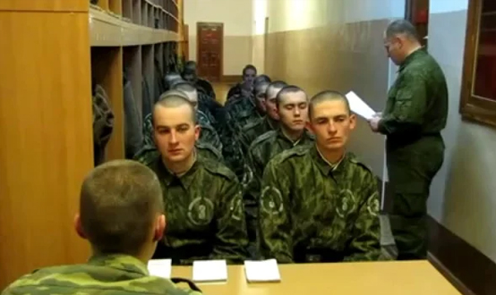

Общая характеристика преступлений против военной службы
Глава 33 УК объединяет статьи 331—352.1. УК РФ
Понятие преступлений против военной службы содержится в ст. 331: это преступления против установленного порядка прохождения военной службы, совершенные военнослужащими, проходящими военную службу по призыву либо по контракту, а также гражданами, пребывающими в запасе, во время прохождения ими военных сборов.
Родовой и видовой объекты данной категории преступлений совпадают — это установленный законодательством порядок прохождения военной службы. Правовое регулирование прохождения военной службы осуществляется Федеральным законом «О воинской обязанности и военной службе» от 28 марта 1998 г., общевоинскими уставами Вооруженных Сил РФ и рядом ведомственных документов.
Непосредственные объекты конкретных преступлений против военной службы связаны со спецификой той либо иной стороны порядка прохождения военной службы.
Виды преступлений против военной службы
По непосредственному объекту преступления против военной службы можно разделить на следующие группы:
1) посягательства на порядок подчиненности:
- неисполнение приказа (ст. 332 УК);
- насильственные действия в отношении начальника (ст. 334 УК);
- сопротивление начальнику или принуждение его к нарушению обязанностей военной службы (ст. 333 УК) и др.;
2) посягательства на уставные взаимоотношения между военнослужащими (дедовщина):
- нарушение уставных правил взаимоотношений между военнослужащими при отсутствии между ними отношений подчиненности (ст. 335 УК);
- оскорбление военнослужащего (ст. 336 УК);
3) посягательства на конституционную обязанность несения военной службы:
- самовольное оставление части или места службы (ст.337 УК);
- дезертирство (ст. 338 УК);
- уклонение от военной службы путем членовредительства или иным способом (ст. 339 УК);
- добровольная сдача в плен (ст. 352.1.);
4) посягательства на порядок несения специальных служб:
- нарушение правил боевого дежурства (ст. 340 УК);
- нарушение правил несения пограничной службы (ст. 341 УК) и др.;
5) посягательства на установленный порядок обращения с вооружением, эксплуатации военной техники:
- оставление погибающего корабля (ст. 345 УК);
- умышленное или неосторожное уничтожение военного имущества (ст. 346, 347 УК);
- нарушение правил полетов или подготовки к ним (ст. 351 УК) и др.
Объективную сторону этих преступлений характеризует установленный законом признак — время совершения деяния: время прохождения службы или время прохождения военных сборов.
Субъект преступлений специальный — военнослужащие, проходящие военную службу по призыву либо по контракту; граждане, пребывающие в запасе и проходящие военные сборы.
Субъективную сторону преступлений против военной службы, предусмотренных ст.333—339, 343—346, 352.1. УК, характеризует умышленная форма вины; ст.347—352 УК — неосторожная форма вины; ст.332, 340—342 УК — и умышленная, и неосторожная.